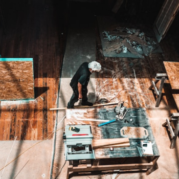
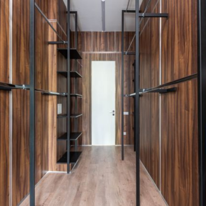
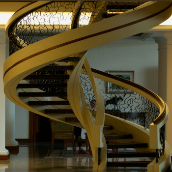
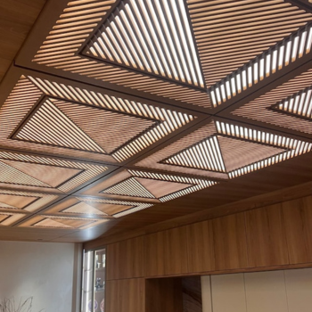
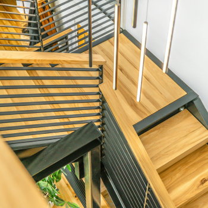
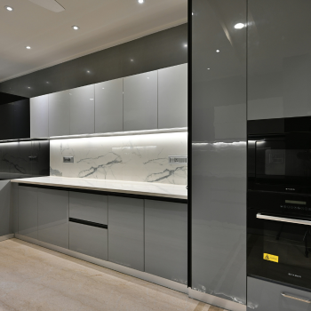

Handcrafted Carpentry, Built to Last
T.C. Carpentry is a family owned carpentry business based in Sandton, Gauteng. From custom furniture to structural work, we bring decades of hands on craftsmanship to every project.






What We Do
A quick look at our core services. Visit the Services page for full details of the services offered by T.C. Carpentry.
Custom Furniture
Tables, chairs, cabinets and bespoke pieces built to your exact spec.
Kitchen Fitting
Full kitchen cupboard installs, fitted from measure to final finish.
Structural Work
Decking, staircase, roof timber, and structural carpentry for homes and sites.
General Repairs
Fixing doors, drawers, general wood and metal repairs around the home.
Why Choose T.C. Carpentry?
- Family owned, with decades of hands on experience
- Honest, transparent quotes with no hidden costs
- Based locally in Sandton, serving all over Gauteng